Step 7, the final check · before and after
Lesson 7, 2026-10-25. 86 states at 390×844 shot after step 6 and after step 7: the 12 below changed; the other 74 are identical or differ by blur noise. Most of step 7's 22 fixes change no pixel at 390 with default text: markup (one header.top-bar, a.back, no role="application", the date pill as one button), loading (the photos, map.css), large text (200%) and the showcase. Record: concept/concept.md → Step 7.
Race browse
#5 #7: the photos are pre-cropped 3:1 files (AVIF/WebP/JPEG with srcset), the first three eager. The crop is the same band the card showed, so the difference is resampling only; the files are 3–5 times smaller.
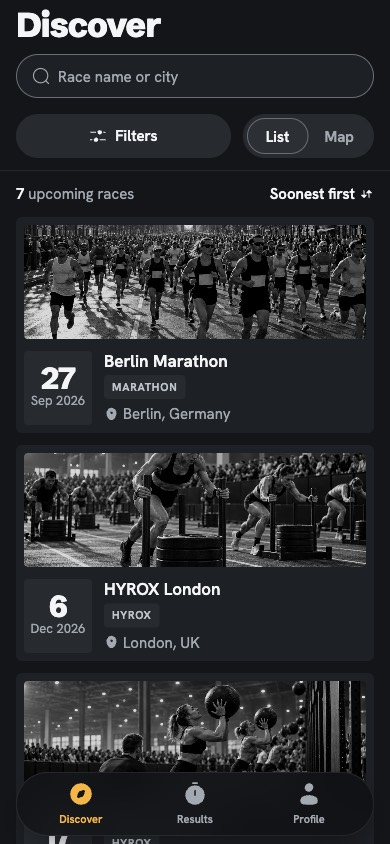
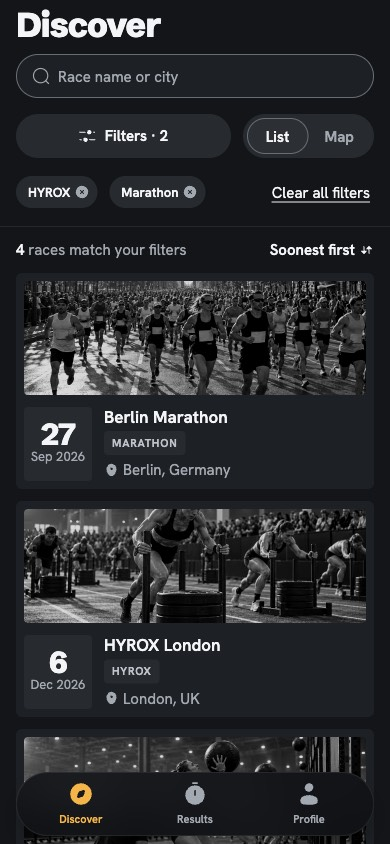
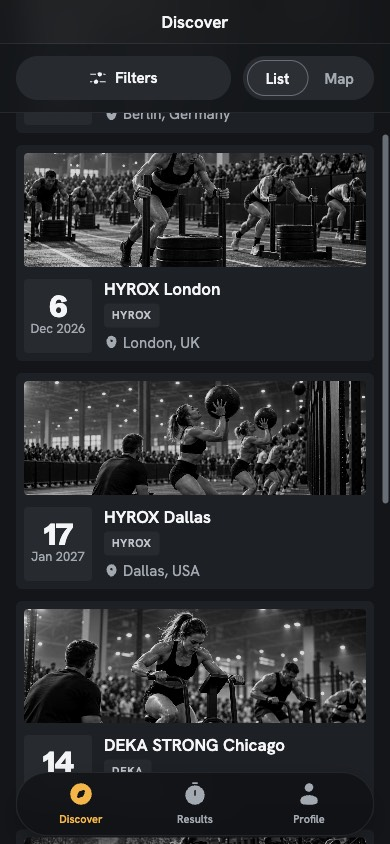
Race detail
#4 #5: only the shown race's photo loads, pre-cropped; #11 #12: one header.top-bar, the back link a.back (no visual change); #10: the error state's action in .state-actions, as on every other state message (the spacing now matches them).

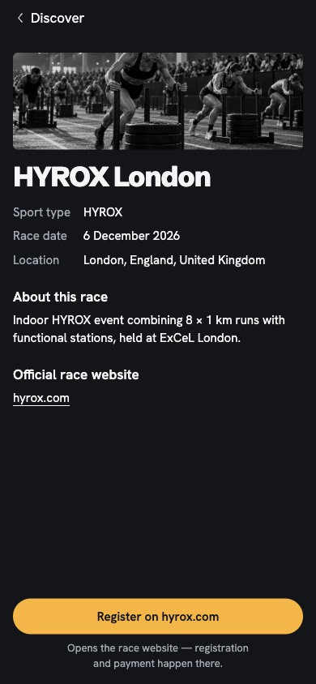


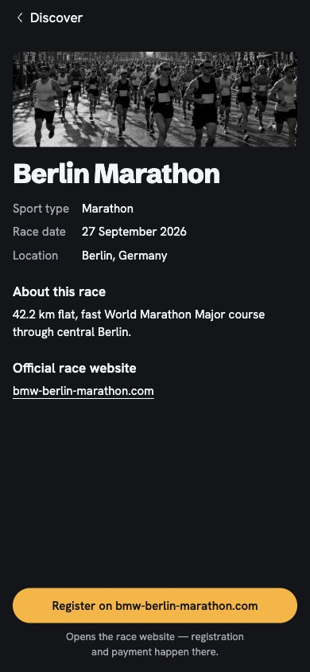

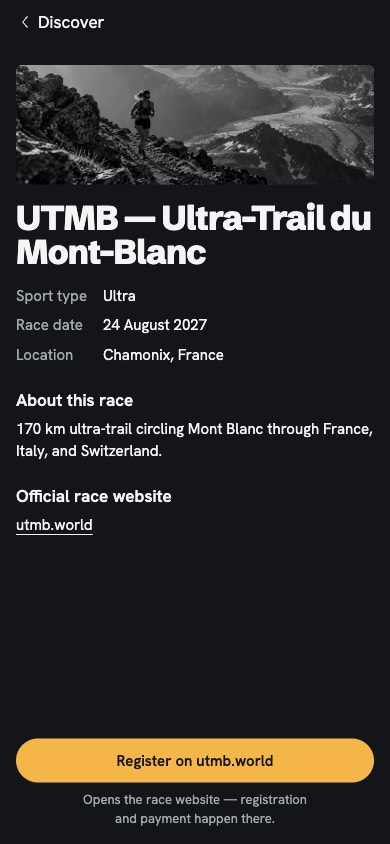
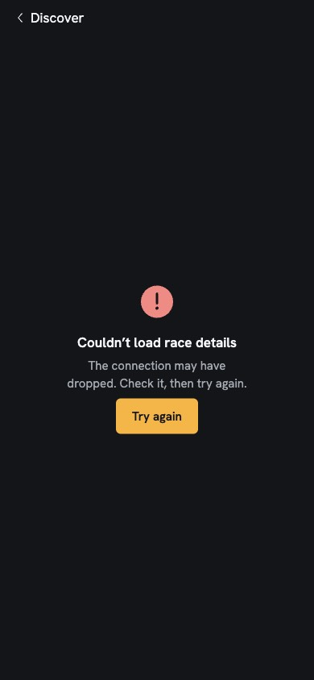
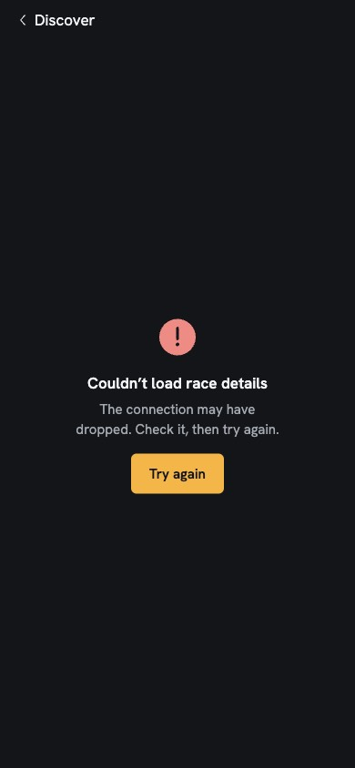

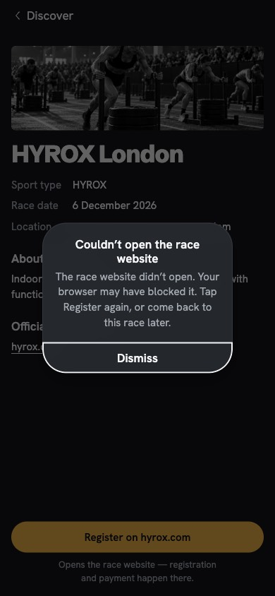
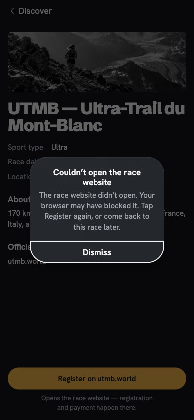
Result detail
#10: the error state's action in .state-actions.

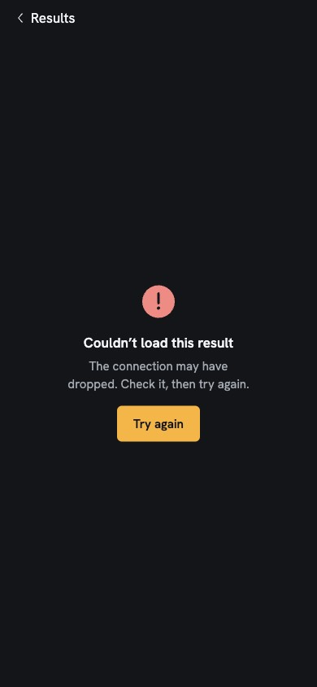
Kit showcase
#13–#20 and the re-check: race card h2, Sign out aria-haspopup, unique ids, 44pt TOC links, the screens' own text, one main landmark, the date pill as one button. Full page.